01. The Brief
Create an original T-shirt illustration for Famiglia Caruso to celebrate their love for fresh ingredients, pizza and community.
The concept: bring burrata and tomato to life as characters going on a pizza date — YOU. ME. PIZZA.
Nantes
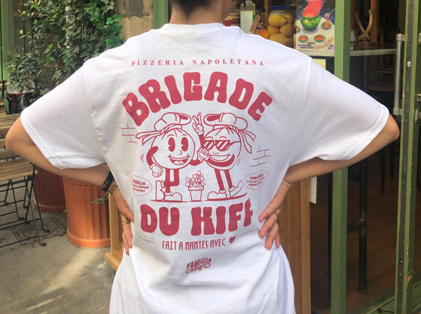
You.
Me.
Pizza
date? ♥
Burrata
Tomato
Pizza
Friendship
Good vibes
Nantes
Always
Create an original T-shirt illustration for Famiglia Caruso to celebrate their love for fresh ingredients, pizza and community.
The concept: bring burrata and tomato to life as characters going on a pizza date — YOU. ME. PIZZA.
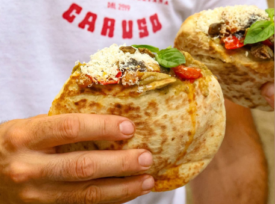
What happens when two of pizza's favourite ingredients go on a date?
I turned burrata and tomato into a playful pair — meeting over their shared love for pizza, good food and good vibes.
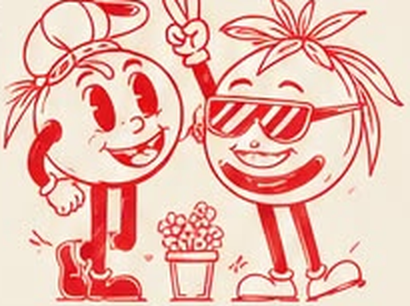
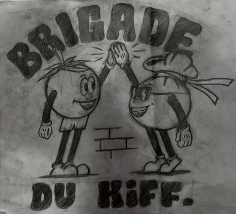
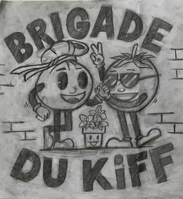
Early sketches exploring characters, poses and typography.
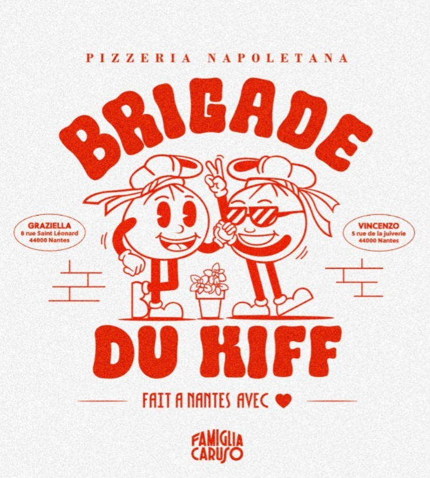
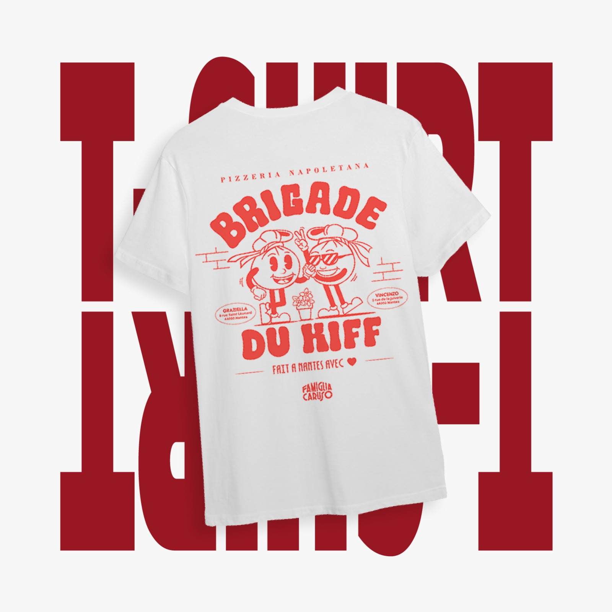
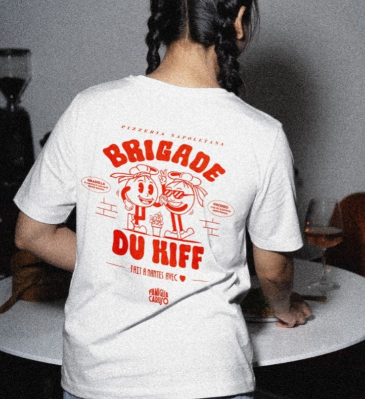
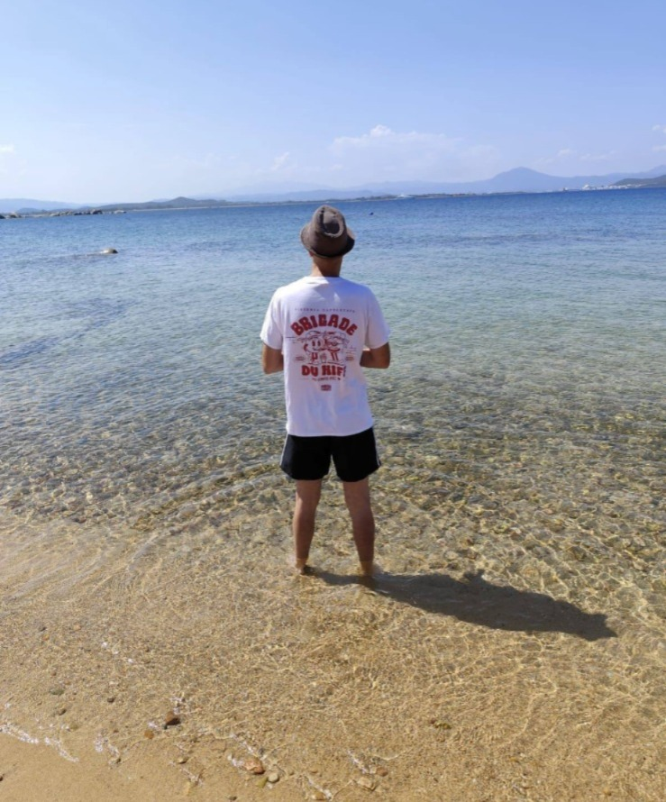
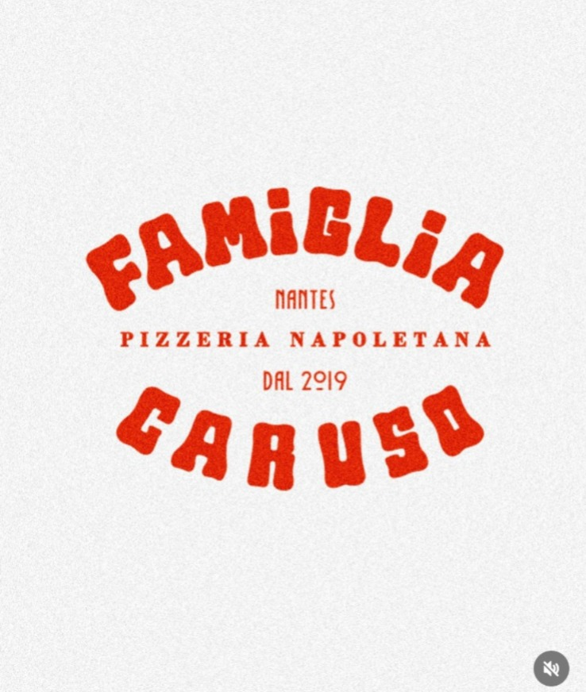
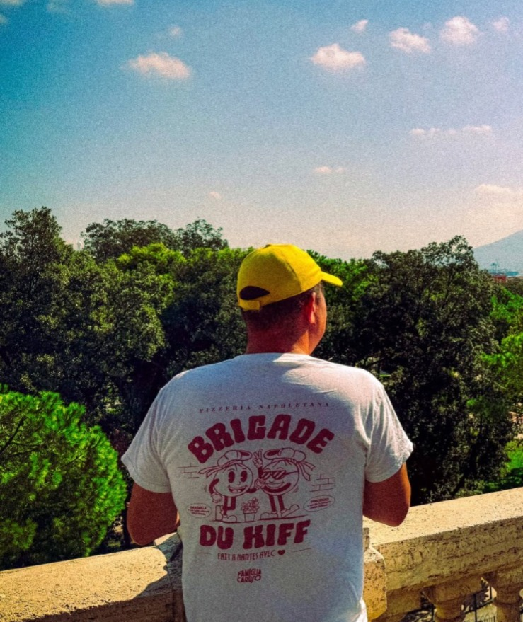
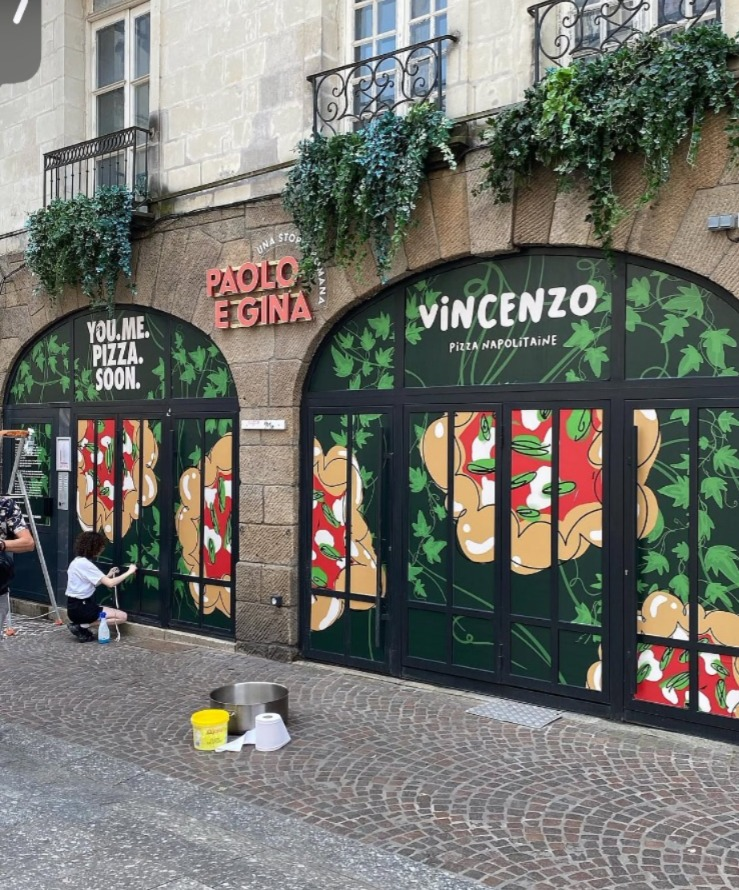